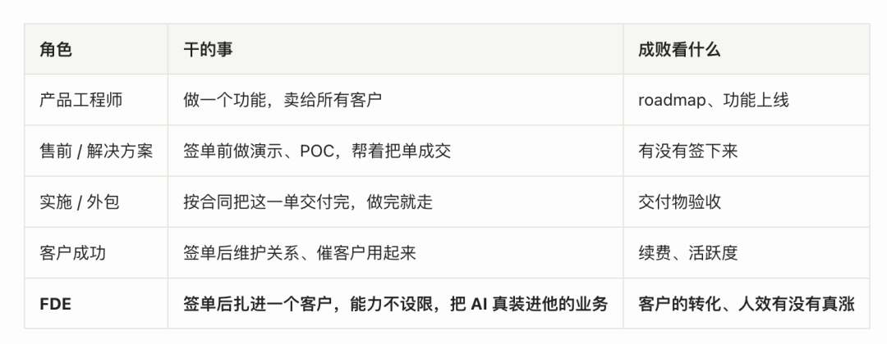
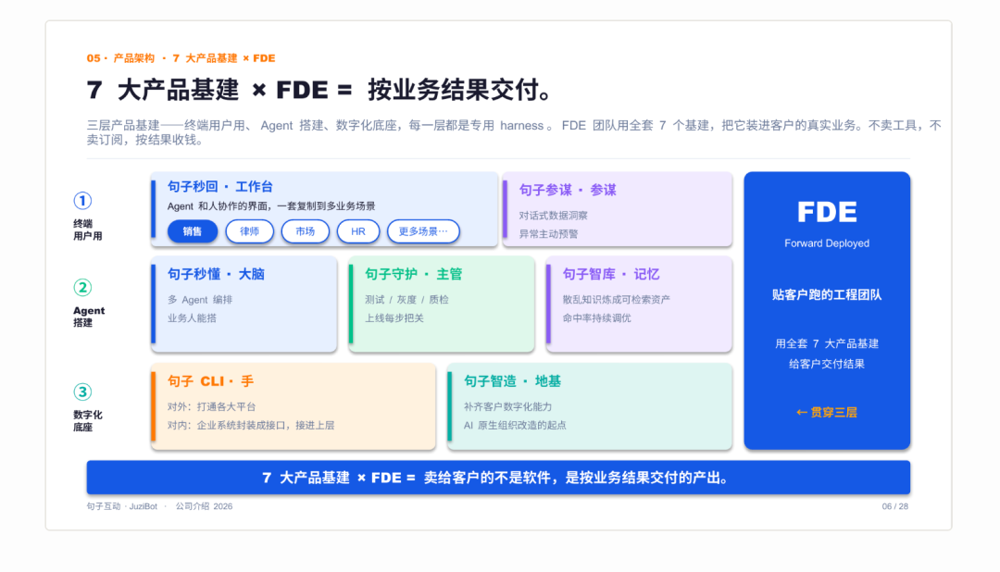
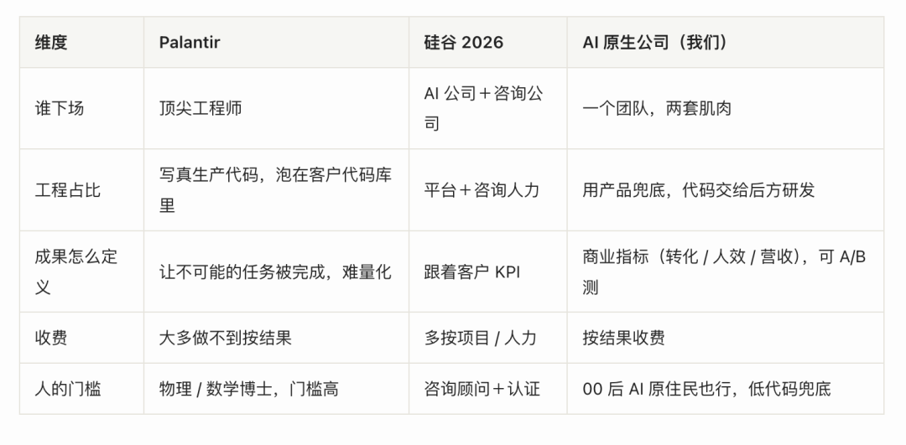

💻 硅谷今年最火的岗位 FDE，我们闷头干了三年
Silicon Valleys Hottest Job in 2026 FDE Weve Been Building It for Three Years
今年硅谷突然都在抢一个岗位，叫 FDE，Forward Deployed Engineer：公司派到客户现场的人，跟客户一起，把一个 AI demo 真正变成天天在用的系统system[ˈsɪstəm] n. 系统。
这岗位post[poʊst] n. 职位我们闷头干了三年。
a16z 把 FDE 称作"tech 最火的岗位role[roʊl] n. 角色；职位"。过去 12 个月，招聘recruit[rɪˈkruːt] v. 招聘量涨了 7 倍：
2025 年 4 月全行业 643 个职位vacancy[ˈveɪkənsi] n. 职位空缺，2026 年 4 月涨到 5,330 个
YC 创业venture[ˈventʃər] n. 创业公司里就有 100 多家在招，三年前一家都没有。
薪水也在水涨船高：顶级 FDE 在 OpenAI、Anthropic 总包 30 万到 60 万美元，做到资深senior[ˈsiːniər] adj. 资深的、纯做技术不带团队的，竟然能超过 100 万美元。
下面看这几家具体specific[spɪˈsɪfɪk] adj. 具体的在做什么：
OpenAI 2024 年底就组建了 FDE 团队，2026 年把它做成独立的 The Deployment Company，初始投资超 40 亿美元，又收购acquire[əˈkwaɪər] v. 收购英国 Tomoro，拿到 150 个资深的 FDE
Anthropic 组了个 Applied AI 团队，专门派工程师进大企业现场做 AI 落地implement[ˈɪmplɪmənt] v. 实施；落地
Google Cloud、Databricks、Scale AI、Adobe，以及几乎所有 B 轮以后的 AI 公司，都在大规模massive[ˈmæsɪv] adj. 大规模的招 FDE
可光招hire[ˈhaɪər] v. 招聘人、买团队还不够。真要把 AI 铺进一家家企业，巨头还是得拉上麦肯锡、德勤、贝恩这些咨询consulting[kənˈsʌltɪŋ] n. 咨询公司。
这事我们 2023 年就在干了，比硅谷早三年。打一开始就说好：客户的业务business[ˈbɪznɪs] n. 业务真做好了才给钱，交个 demo、一份 SOP、几段提示词或者给套软件，都不算数。
FDE 是什么，最早origin[ˈɔːrɪdʒɪn] n. 起源怎么来的

FDE 不是顾问，也不是一般的软件工程师，是真正被派进客户内部的人：进客户的群，跟客户的产品、研发坐一块儿，拿客户真实的数据和系统干活，开他们的晨会、动手写代码、线上出故障outage[ˈaʊtɪdʒ] n. 故障就去修。
他既要定"做什么"，也得把东西做出来、接进系统、保证ensure[ɪnˈʃʊr] v. 保证上线后一直能跑。衡量evaluate[ɪˈvæljueɪt] v. 评估；衡量他的不是写了多少代码、交了几份文档，是这套系统到底有没有人在用、客户的生意有没有变好。
Palantir 为什么要发明invent[ɪnˈvent] v. 发明它？它最早的客户是情报intelligence[ɪnˈtelɪdʒəns] n. 情报机构，这种客户有个特殊麻烦，没法清楚告诉你想要什么：东西是机密，写不进需求文档，开不进会议室。
Good ideas don't come from eating strawberries in Palo Alto. They come from the fields of Djibouti and the factory floors of Detroit.
好想法不是在 Palo Alto 吃草莓时冒出来的，它们出现emerge[ɪˈmɜːrdʒ] v. 出现在吉布提的田野上、底特律的工厂车间里。
但 Palantir 真正精妙的地方不在"把人派出去"，在背后那套分工division[dɪˈvɪʒən] n. 分工。
下场的 FDE 其实是两种人搭班子cadre[ˈkædreɪ] n. 班子；核心团队：
Palantir 今天一半以上收入revenue[ˈrevənjuː] n. 收入的 Foundry，就是这么从一个个客户现场长出来的。
到 2016 年，Palantir 内部internal[ɪnˈtɜːrnəl] adj. 内部的 FDE 的人数比软件工程师还多。今天这家公司市值超过 3000 亿美元，毛利率margin[ˈmɑːrdʒɪn] n. 利润率 80%，是软件公司的水平，不是咨询公司（埃森哲只有 32%）。FDE 不是辅助auxiliary[ɔːɡˈzɪliəri] adj. 辅助的岗位，是它能从"被人骂作咨询公司"长成真正产品公司的原因。
这是 FDE 的模式：让最顶尖elite[ɪˈliːt] n. 精英；顶尖的工程师下场。
Palantir 的 FDE 不少是物理、数学背景background[ˈbækɡraʊnd] n. 背景，技术底子比市面上大多数人都硬。这套打法能啃下最难的客户，可门槛barrier[ˈbæriər] n. 门槛；障碍也高得吓人：你得找到既是物理博士、又愿意常驻客户现场写生产代码的人，这种人又少又贵。所以十几年，没人学得来。
Palantir 闷头干了十几年，外界一直当它是个特例exception[ɪkˈsepʃən] n. 特例，没人学。直到这两年，大批企业enterprise[ˈentərpraɪz] n. 企业砸钱上 AI，钱花了，东西却跑不起来。
MIT NANDA 2025 年调了 300 个公开的 AI 项目，95% 的企业试点对利润profit[ˈprɑːfɪt] n. 利润几乎没有可衡量的影响。
问题并不出在模型，GPT、Claude 都很能打，但是落地现场那摊东西却面临很大的挑战：脏数据、没人写过文档的工作流、合规compliance[kəmˈplaɪəns] n. 合规红线、一堆为 AI 之前的时代设计的老系统。
一个 FDE 的原话：
更麻烦的是，AI 系统和传统traditional[trəˈdɪʃənl] adj. 传统的软件，出问题的方式不一样。传统软件的风险在上线前，设计、集成integrate[ˈɪntɪɡreɪt] v. 集成、测试，跑通了基本就一直跑，真出错也直接报错，好查好修。
AI 反过来，风险在上线后：它是个概率系统，测试时好好的，一碰到真实数据和真实用户就开始退化degrade[dɪˈɡreɪd] v. 退化，还不报错，只是悄悄变得不靠谱，答非所问、前后矛盾，一点点把用户的信任磨掉。偏偏这时候交付deliver[dɪˈlɪvər] v. 交付的人都走了，内部团队转去做下一个功能，顾问按合同干完就撤。
系统最该有人盯的时候，没人了。FDE 补的就是这个位置：人在客户现场field[fiːld] n. 现场；实地，问题一冒头就当场调、当场改。
再往根上说，Bob McGrew（Palantir 第二位工程师、后来的 OpenAI 首席chief[tʃiːf] adj. 首席的研究官）的角度是：
Agent 还没有现成ready[ˈredi] adj. 现成的的样子。SaaS 你一上来就知道要做成什么样，照着做个更好的去抢市场market[ˈmɑːrkɪt] n. 市场就行；
Agent 不是，没人知道一个销售sales[seɪlz] n. 销售 Agent、客服 Agent 最后该长成什么样，只能钻进客户的真实业务里一点点试，而这种试只能在客户内部做。
结论conclusion[kənˈkluːʒn] n. 结论是：谁想在 Agent 时代找到 PMF，FDE 大概是绕不开的路。
巨头giant[ˈdʒaɪənt] n. 巨头自己建了，还得拉上咨询公司
巨头的办法approach[əˈproʊtʃ] n. 方法；办法，是把咨询公司大规模拉进来一起干：
自己建了为什么还要找咨询公司？OpenAI 不缺钱、不缺工程师engineer[ˌendʒɪˈnɪr] n. 工程师，连现成的 FDE 都买得到。它缺的是另一样：钻进一家企业、把生意摸透fathom[ˈfæðəm] v. 彻底理解、最后对结果负责。这件事麦肯锡、德勤干了几十年，OpenAI 想从零练出来很慢，不如直接direct[dəˈrekt] adj. 直接的拉它们一起干。
Bob McGrew 给想做 FDE 的创业者founder[ˈfaʊndər] n. 创始人提过一个醒：
“如果不是非做不可，别碰，很容易做着做着就变成纯做服务的外包outsource[ˈaʊtsɔːrs] v. 外包公司。但如果你的市场离了 FDE 根本起不来，那它可能就是你唯一unique[juːˈniːk] adj. 唯一的行得通的方式。”
这套"AI 公司＋咨询公司"的组合combination[ˌkɑːmbɪˈneɪʃn] n. 组合，在中国基本没有。
埃森哲、德勤、麦肯锡在中国都有团队，但规模scale[skeɪl] n. 规模、话语权比美国小一截；本土咨询公司里，也没谁跟大模型公司这么深度绑定bind[baɪnd] v. 绑定。
我们没等这个组合出现。从 2023 年起，我们就让一个团队squad[skwɑːd] n. 团队；小组同时长出两套肌肉：懂客户的生意，懂 AI 工程。逼我们走这条路的是中国客户：业务真变好他们才续费renew[rɪˈnuː] v. 续费，过程做得再漂亮也不买单。
公开资料里反复出现一个事实fact[fækt] n. 事实：Palantir 最成功的几位 FDE，背景是物理和数学，不是 CS。有的来自硬件hardware[ˈhɑːrdwer] n. 硬件工程，加入前根本没写过软件。这一拨人里还有产品product[ˈprɑːdʌkt] n. 产品经理和设计师。Palantir CEO Alex Karp 是哲学philosophy[fɪˈlɑːsəfi] n. 哲学博士。
我们自己 FDE 的负责人director[dɪˈrektər] n. 负责人，是个学法语的 00 后女生。
说穿了并不意外surprise[sərˈpraɪz] n. 意外。Palantir 的 FDE 团队里，写代码的是 Delta，真正稀缺scarce[skers] adj. 稀缺的的是钻业务的 Echo。Shyam 招 Echo 专挑"反叛者rebel[ˈrebəl] n. 反叛者"：不只懂这行怎么干，还能看出现在这套为什么不够好。
FDE 真正的核心core[kɔːr] n. 核心能力，是读懂客户的生意、把要交付的成果设计出来。写代码是后半段的事。能想清楚"客户的钱从哪儿来、卡在哪儿、AI 能从哪儿撬动leverage[ˈlevərɪdʒ] v. 撬动它"的人，比只会写代码的人稀缺得多。
大部分公司做 AI 落地的第一反应，是招算法algorithm[ˈælɡərɪðəm] n. 算法工程师。错了。第一个该招的，是能听懂客户怎么赚钱earn[ɜːrn] v. 赚钱的人，就是 Palantir 那个 Echo。
最早交付handover[ˈhændoʊvər] n. 交接；交付全靠 PE（Prompt 工程师）一个人跑。他能照着客户说的把 prompt、把流程搭出来，可客户那行的生意怎么转、那些话背后的业务逻辑logic[ˈlɑːdʒɪk] n. 逻辑是什么，他摸不透。客户说一套，他照着搭一套，结果outcome[ˈaʊtkʌm] n. 结果总不是客户真正要的。客户不满意，我那一年半有一半时间在救火，救的都是同一类：交付出去的 Agent 又出问题problem[ˈprɑːbləm] n. 问题了。
被客户问住、设计被质疑challenge[ˈtʃælɪndʒ] v. 质疑；挑战的时候，PE 没底气，只能搬一句"客户就想要这个"来挡，其实他自己也没真懂客户要什么。东西的质量quality[ˈkwɑːləti] n. 质量也兜不住：测试全靠手感，改好一处又坏一处。
后来我们改了打法：进场不再让 PE 单挑，先拉一个这行的业务专家expert[ˈekspɜːrt] n. 专家一起进去，把客户的生意、流程、门道吃透，再带着 PE 一块搭。业务operation[ˌɑːpəˈreɪʃn] n. 业务；运营专家管"该做成什么"，PE 把它落出来。配合coordinate[koʊˈɔːrdɪneɪt] v. 配合；协调一阵子，PE 自己也慢慢长出了懂业务的能力，能听懂客户话里的生意了。
想明白的就一条：第一个进客户现场的，得是真懂这行生意的人，不能让一个只会搭 prompt 的人单扛全部entire[ɪnˈtaɪər] adj. 全部的。
前年十月我读到 Palantir 的 FDE，第一反应reaction[riˈækʃn] n. 反应是：我们要的就是这个名字。"按结果交付"的方向direction[dɪˈrekʃn] n. 方向我们三年没改，但定义一直模糊。FDE 这个词把它定义define[dɪˈfaɪn] v. 定义清楚了：一个客户，很多能力，对客户身上的真实成果负责。
改名之后，我们改的是这件事本身itself[ɪtˈself] pron. 本身怎么干。四件事：
进场，先摸客户怎么赚钱monetize[ˈmɑːnɪtaɪz] v. 赚钱；变现。一个项目分三个阶段phase[feɪz] n. 阶段。第一阶段是诊断，懂这个行业的业务专家驻场三五天，把客户的 SOP、知识库、整条链路摸清楚：他怎么获客、怎么转化convert[kənˈvɜːrt] v. 转化、钱卡在哪个环节。这些业务专家，有的就是从客户那个行业里挖来的老手：比如做在线教育时，我们跟一家头部在线教育公司的前 COO 深度绑定，他离职resign[rɪˈzaɪn] v. 离职后跟我们一起，把这个行业的 AI 落地一遍遍打磨出来。不上来就装软件software[ˈsɔːftwer] n. 软件，先搞明白这门生意。这一步就是 Palantir 那个 Echo 在干的事。
搭，是几个人一起搭。第二阶段，业务专家带着行业经验experience[ɪkˈspɪriəns] n. 经验，和 FDE 一起把 Agent 搭起来、跑内测。这一步过去是 PE 一个人硬扛，现在不是了：懂业务的管业务，工程engineering[ˌendʒɪˈnɪrɪŋ] n. 工程的活交给工程师，谁也别替谁硬撑。
质量，靠句子守护guard[ɡɑːrd] v. 守护兜着。PE 时代最做不好的就是测试test[test] n. 测试调优，全靠人盯，改对了 A 又错了 B。我们把它做成了一个产品，叫句子守护：它自己从客户百万级的真实聊天记录里，挖出用户可能问的刁钻问题，一条条编成测试题（连正确答案该是什么都写好），拿去考被测的 Agent，自动auto[ˈɔːtoʊ] adj. 自动的跑、自动出报告：每条的通过率、答得快不快、花了多少钱、要不要转人工，全摆在报告里。这套东西和具体业务解耦，FDE 在现场踩的坑都沉淀accumulate[əˈkjuːmjəleɪt] v. 积累；沉淀进去，下一个客户进场，他手里的杠杆更大。
交付的是成果，不是一个搭好的流程process[ˈprɑːses] n. 流程。怎么证明prove[pruːv] v. 证明成果是真的？落地时我们和客户做 A/B：AI 组是销售加 AI 一起干，对照contrast[kənˈtræst] v. 对照组是同样的销售、纯人工，两组的线索质量、团队水平都拉平，只差用不用 AI。然后整条链路一个环节一个环节地比：触达率、响应respond[rɪˈspɑːnd] v. 响应率、转化率、人效，每一步都有数据，全程留痕，不是只看最后一个大盘数字。两组一摆，AI 带来多少增量increment[ˈɪŋkrɪmənt] n. 增量，清清楚楚。我们也按这个结果收费charge[tʃɑːrdʒ] v. 收费：客户的人效真涨了，我们才拿钱。
这四件事合起来，懂生意的人就不用一个人硬扛了：他站在最前面，背后有业务专家、有工程师、有句子守护这套工具tool[tuːl] n. 工具接着。他不用自己写代码code[koʊd] n. 代码，系统替他兜着。
这套收费方式method[ˈmeθəd] n. 方式；方法，2023 年我们就定下了。当时国内同行主流mainstream[ˈmeɪnstriːm] n. 主流还是按人头、按工时、按项目里程碑收，按结果的我们是少数。我后来才知道，这正是 FDE 区别distinguish[dɪˈstɪŋɡwɪʃ] v. 区分于 SaaS 的命根子：SaaS 按席位、按用量收钱，FDE 卖的是"你帮客户解决了一个问题"。这里头有个不对称asymmetric[ˌeɪsɪˈmetrɪk] adj. 不对称的：大客户既不信自己能成，也不信你能成，因为他见过太多烂尾项目。
所以早期由我们把风险risk[rɪsk] n. 风险全扛下来，做成了、客户业务真变好了，再付钱。三年下来这条路站住了：客户续约率高，单个客户的合同contract[ˈkɑːntrækt] n. 合同越做越大。拿一个在线教育的头部客户说，用上这套之后，AI 组的产出output[ˈaʊtpʊt] n. 产出是对照组的三倍，一个销售一个月能盯的人从一千做到三千，整条链路从人海一对一变成了一套系统。
他付给我们的钱也跟着这个涨幅increase[ˈɪnkriːs] n. 涨幅走：盯的人翻三倍，付的也翻三倍。我们赚的就是这中间的人效提升boost[buːst] n. 提升，按线索量收费，不按人头、不按工时。
我们今天有 7 个产品基建infrastructure[ˈɪnfrəstrʌktʃər] n. 基础设施，但不是一开始就规划好的。最早只有两个：句子秒回和句子秒懂，一个是人和 Agent 协作collaborate[kəˈlæbəreɪt] v. 协作的工作台，一个是搭 Agent 的大脑。剩下的全是 FDE 在客户现场一个个撞出来的：撞知识knowledge[ˈnɑːlɪdʒ] n. 知识库的墙，长出句子智库；撞测试的墙wall[wɔːl] n. 墙（比喻瓶颈），长出句子守护；撞老系统legacy[ˈleɡəsi] n. 遗留系统接不进来的墙，长出句子 CLI。现场踩的坑pitfall[ˈpɪtfɔːl] n. 陷阱；坑，一个个变成了下一个 FDE 进场就能用的杠杆。
这 7 个产品基建分三层，从客户天天在用的那层往下说：
FDE 贯穿penetrate[ˈpenətreɪt] v. 贯穿；渗透这三层，用全套 7 个产品基建，把 AI 装进客户的真实业务。客户开通就拿到我们十年沉下来的行业industry[ˈɪndəstri] n. 行业能力，不用从零搭。这也是为什么我们敢按结果收费：不是赌运气luck[lʌk] n. 运气，是手里有这套基建兜底。

我们最早从销售切进去，这个场景scenario[sɪˈnærioʊ] n. 场景离钱最近，AI 帮客户多转化、多签单，效果最容易用数字讲清楚。同一套 FDE 打法和产品基建跑通之后，往别处复制replicate[ˈreplɪkeɪt] v. 复制就快了：场景上，销售之外，律师、市场、HR 都在做；行业上，从在线教育起家，现在金融finance[ˈfaɪnæns] n. 金融、医美、电商也铺开了。换个场景、换个行业，做法都一样：把人效做翻倍，把效果effect[ɪˈfekt] n. 效果摆成数字。
三种 FDE，同一个角色character[ˈkærəktər] n. 角色，不同的活法
我们和 Palantir 解的是同一个问题issue[ˈɪʃuː] n. 问题；议题：客户没法清楚地告诉你他要什么。Palantir 的客户是情报机构，机密classified[ˈklæsɪfaɪd] adj. 机密的说不出口；我们的客户是中国 to B，业务流复杂complex[kəmˈpleks] adj. 复杂的、KPI 多元、组织里利益盘根错节，需求文档同样写不清楚。两边的解法都是把人塞进去，靠观察observe[əbˈzɜːrv] v. 观察、实验、当场动手搞懂客户真实的业务。
但三种模式mode[moʊd] n. 模式的活法很不一样：

一是成果achievement[əˈtʃiːvmənt] n. 成果能不能量化。Palantir 的成果常是"让一个原本不可能完成的任务mission[ˈmɪʃn] n. 任务被完成"，比如破获一起恐袭、合规出一份报告，难量化；我们的成果是转化率、人效、营收turnover[ˈtɜːrnoʊvər] n. 营收；营业额，可以 A/B 测。所以我们能做按结果收费，Palantir 大部分majority[məˈdʒɔːrəti] n. 大部分单子做不到。这一点point[pɔɪnt] n. 一点；方面我们比 Palantir 走得远。
二是对人的门槛threshold[ˈθreʃhoʊld] n. 门槛。Palantir 的 FDE 哪怕是物理博士，平均average[ˈævərɪdʒ] adj. 平均的水平也比中国市场上大部分人高一截；我们这边的 FDE，可以是个 00 后、一个长在 AI 里的"原住民native[ˈneɪtɪv] n. 原住民"。
不是要求更低，是 Agent 时代的低代码工具链帮 FDE 兜了底：他天生把 AI 当手脚使，只要能想清楚客户怎么赚钱、把成果设计design[dɪˈzaɪn] v. 设计出来，剩下的交给工具。OpenAI、Anthropic 今年新做 FDE 也是这个思路：前面是熟悉业务的人，后面是平台platform[ˈplætfɔːrm] n. 平台和工具兜底。
AI 没有让客户裁员，反而让客户去抢更多流量traffic[ˈtræfɪk] n. 流量。
我们本来以为人效翻倍double[ˈdʌbəl] v. 翻倍，客户就会把差的销售裁掉。结果客户不裁。他用同样多的人，把市场上所有好的线索lead[liːd] n. 线索全抢了过来。
市场marketplace[ˈmɑːrkɪtpleɪs] n. 市场上的流量就那么多，谁的人效高，谁就能多拿。
好销售和差销售用上 AI，提升的幅度magnitude[ˈmæɡnɪtuːd] n. 幅度其实差不多。真正拉开差距gap[ɡæp] n. 差距的不是销售本身的好坏，是他愿不愿意用 AI。这件事甚至改了我们招人的画像profile[ˈproʊfaɪl] n. 画像；轮廓。以前嫌一个人想法太多、不够踏实steady[ˈstedi] adj. 踏实的；稳重的，现在这种人反而是我要的：脑子里点子多，会使 AI，还拿得准 AI 交出来的东西到底行不行。
按结果收钱这条路，三年前我们也没底；三年下来跑通了，比按工时收费的同行peer[pɪr] n. 同行稳，客户也认。硅谷今年集体做 FDE，说到底也是认了这件事：客户认的是结果，不是过程procedure[prəˈsiːdʒər] n. 过程；程序。
干 FDE，真正稀缺的是这种人：能扎进一门陌生novel[ˈnɑːvəl] adj. 新奇的；陌生的生意、快速摸懂，又对结果较真。会写代码反而是最不缺的。这种人，离自己出去开公司，其实只差一步。
Palantir 十几年前就把这条路走通了，靠的是最顶尖foremost[ˈfɔːrmoʊst] adj. 最顶尖的的工程师。硅谷今年才把它捧成最火的岗位，巨头一边自己建、一边拉咨询公司，创业entrepreneur[ˌɑːntrəprəˈnɜːr] n. 创业者公司则自己招人。我们 2023 年就上路了，没叫它 FDE，靠的是一个团队自己长出两套肌肉muscle[ˈmʌsəl] n. 肌肉（比喻能力），三年踩坑沉淀成 7 个产品基建，从第一天就按结果收钱。
最早把 FDE 讲清楚的那几个人，Palantir 的 Shyam、Bob，反复repeated[rɪˈpiːtɪd] adj. 反复的说的也不是"工程师驻场"，是"卖成果，不卖软件"。这正是我们被国内domestic[dəˈmestɪk] adj. 国内的客户逼着走的路。
说大一点，FDE 解的是 AI 这两年最拧巴的一个错配：技术早成熟了，企业也急着要，可大模型变不成业务生产力productivity[ˌprɑːdʌkˈtɪvəti] n. 生产力，中间缺的，就是把模型真正落进一门门生意里的人。
这个角色，中美都验证verify[ˈverɪfaɪ] v. 验证过是最优解：美国有 Palantir、有 OpenAI 的Deployment Company，中国是我们。
大模型不会自己变成客户的转化、人效、营收，得有人扎进去immerse[ɪˈmɜːrs] v. 沉浸；深入，一寸一寸把它落下来。这就是 FDE。
我们想做的，是在中国把这件事做到极致：让 AI 别停在 demo 里，真正变成一家家企业手里的生产力，给他们创造看得见的价值value[ˈvæljuː] n. 价值。